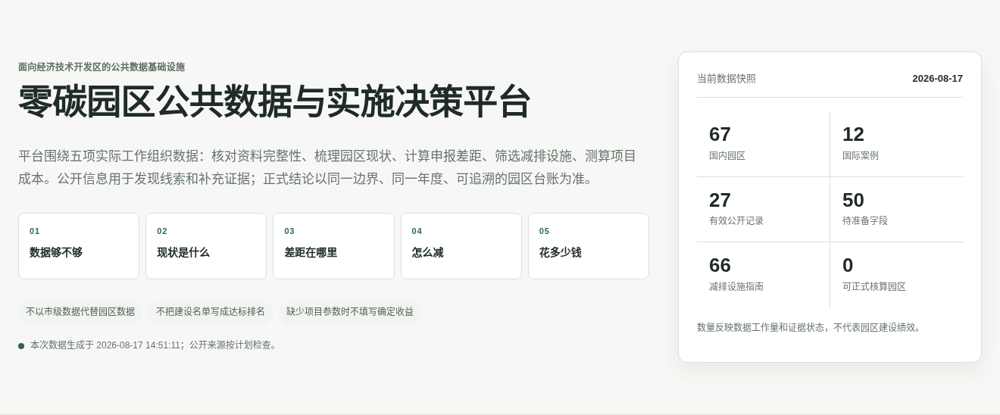

山西生态日活动梳理大同和阳泉零碳园区建设任务
山西公开信息提到，大同经开区和阳泉高新区已进入首批国家级零碳园区建设名单，并将能源转型、产业升级、节能增效以及工业、建筑、交通领域的清洁低碳改造作为后续重点。该记录用于建设任务跟踪，不作为园区绩效结论。
用途边界：用于核对建设范围、实施主体和进展；涉及绩效时仍需园区台账。
本期纳入12条经过去重和相关性筛选的记录，其中实施类10条、政策标准0条。
记录来自12个独立来源；3条含量化线索，3条已明确关联具体园区。
本期较集中的工作主题为：项目与资金6条、清洁供能4条、计量与能碳管理4条。


| 项目 | 数量 | 说明 |
|---|---|---|
| 入选记录 | 12 | 经相关性筛选和事件归并后的记录 |
| 实施类记录 | 10 | 占83%，包括园区建设、技术设施和项目投融资 |
| 政策标准记录 | 0 | 占0% |
| 含量化线索 | 3 | 仅表示存在数字，不代表可直接进入园区核算 |
| 明确关联园区 | 3 | 已完成园区对象关联的记录 |
| 独立来源 | 12 | 最高单一来源占比8% |
| 归并关联材料 | 0 | 同一事件下保留的补充来源 |
| 分类 | 记录数 | 实际占比 | 参考占比 |
|---|---|---|---|
| 园区建设 | 4 | 33% | 35% |
| 技术与设施 | 5 | 42% | 25% |
| 政策与标准 | 0 | 0% | 15% |
| 数据与评估 | 2 | 17% | 15% |
| 项目与投融资 | 1 | 8% | 10% |
| 其他重要动态 | 0 | 0% | 0% |
| 工作主题 | 涉及记录 |
|---|---|
| 项目与资金 | 6 |
| 清洁供能 | 4 |
| 计量与能碳管理 | 4 |
| 设备与系统节能 | 2 |
| 交通与物流 | 2 |
山西公开信息提到，大同经开区和阳泉高新区已进入首批国家级零碳园区建设名单，并将能源转型、产业升级、节能增效以及工业、建筑、交通领域的清洁低碳改造作为后续重点。该记录用于建设任务跟踪，不作为园区绩效结论。
用途边界：用于核对建设范围、实施主体和进展；涉及绩效时仍需园区台账。
大同市召开国家级零碳园区建设推进会，听取首批项目进展和堵点，围绕项目保障、充换电站布局及换电重卡应用场景明确责任与解决措施。该记录用于观察园区项目治理和交通场景推进，不代表园区整体减排绩效。
用途边界：用于核对建设范围、实施主体和进展；涉及绩效时仍需园区台账。
2026年全国生态日山东活动暨烟台论坛上，海阳市和东营市垦利区分别交流丁字湾新型能源创新区、垦利经济开发区国家级零碳园区建设做法。该记录作为案例调研入口，后续仍需获取园区边界、年度台账和项目参数。
用途边界：用于核对建设范围、实施主体和进展；涉及绩效时仍需园区台账。
公开报道梳理了园区在能源供给、工艺改造和数字化管理方面的推进方式。平台将其作为措施线索与调研入口，不把报道中的跨园区数字直接并入单个园区绩效。
用途边界：用于核对建设范围、实施主体和进展；涉及绩效时仍需园区台账。
北京的实施安排同时覆盖零碳能源系统、绿色低碳基础设施、园区企业改造和产业链协同。绿电直连、储能、虚拟电厂等被列为因地制宜选项，而不是所有园区的统一起点。
用途边界：作为设施改造和项目储备线索；投资、节能量和减排量需可研或测量验证。
九龙坡区公开信息显示，九龙新城园区已获评市级近零碳园区等试点，近三年二氧化碳排放强度下降14%；同时披露再生铝、企业节能改造和碳市场参与情况。14%为公开报道线索，正式比较前需核对园区边界、基准年、分母口径和原始清单。
用途边界：作为设施改造和项目储备线索；投资、节能量和减排量需可研或测量验证。
苏相合作区公开案例披露，江苏美的清洁电器建设4.32 MWp光伏电站，实施空压、制冷、喷涂等15项节能降碳项目，年减排超过3300吨。该数据属于企业边界案例，可用于设施参数和测量验证调研，不作为园区整体绩效。
用途边界：作为设施改造和项目储备线索；投资、节能量和减排量需可研或测量验证。
广德经开区国家级零碳园区综合建设项目中的工商业储能二期项目公开中标候选人信息，项目工期为365个日历天，并要求通过工程和并网验收。该记录可用于观察储能设施的工程化进度，不能据此推断实际投资额、运行收益或减排量。
用途边界：作为设施改造和项目储备线索；投资、节能量和减排量需可研或测量验证。
公开讨论指出，园区项目常受投资回收期、企业参与意愿和跨部门协同制约。平台将绿电方案放入条件实施型措施，并优先识别计量、节能、余热、水和资源协同等近期基础工作。
用途边界：作为设施改造和项目储备线索；投资、节能量和减排量需可研或测量验证。
金昌公开信息提到园区能碳管理平台、风光资源协同和负荷预测等建设内容。相关信息可用于识别系统架构和数据需求，正式评价仍需园区边界内的能源与排放台账。
用途边界：用于更新数据字段、核算口径和评估方法；正式使用需保留版本与原始凭证。
国家级经开区既是园区减排的重要对象，也是经济产出、产业发展、开放水平与绿色转型需要共同考虑的治理单元。平台因此保留经济产出和产业结构字段，不把零碳建设简化为单一能源问题。
用途边界：用于更新数据字段、核算口径和评估方法；正式使用需保留版本与原始凭证。
天津经开区围绕中央预算内投资、超长期特别国债、绿色低息专项贷款和节能降碳专项资金开展培训，近40家企业参加。该信息可用于识别项目储备、资金来源和申报材料要求，不直接替代项目可研或资金承诺。
用途边界：用于识别项目条件、实施主体和资金线索；收益与风险需基于项目参数复核。